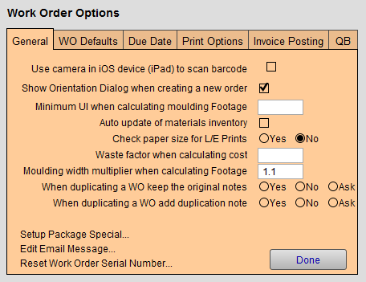

Set up Work Order General Options
How to open the Work Order Options
-
On the Main Menu, in the Work Orders section, open the Options tab.
-
Click the More Options... button.
-
Open the General tab.
Work Order Options - General tab Explained

Use camera in iOS device (iPad) to scan barcode Checkbox
-
When checked, your iPad becomes a barcode scanner. This feature is only available when using FrameReady on an iPad.
-
Use the Photo Capture app on iPhone or iPad to add barcodes to Product and Price Code items.
-
See: iPhone and iPad App
Show Orientation Dialog when creating a new order Checkbox
-
The dialog box prompts the framer/designer to select either a vertical or horizontal orientation of the piece.
Minimum UI when calculating moulding Footage Field
-
Enter a value to always charge a minimum united inch when calculating frame footage, e.g., if a value of 24 is entered, then a 5x7 or 8x10 frame will be priced at 24 UI instead of 12 or 18.
-
Guarantee yourself a minimum UI when selling any frame using this option.
Auto Update of Materials Inventory Checkbox
-
When checked, FrameReady tracks inventory. If you are using FrameReady to automatically track your materials inventory (moulding, matboard, glass, etc), then check this box.
-
When enabled, this option requires you to toggle back and forth between two Work Order screens using the Modify Work Order and then pair of Done or Keep as Estimate buttons.
Check paper size for L/E prints Radio Button
-
Verifies frame is larger than paper size for Limited Edition prints when media margins are entered into the media margin fields on the Work Order or Product files.
-
Prevents you from having to cut the print to fit the frame if, for instance, the mat margins are too small.
Waste factor when calculating cost Field
-
Enter the percentage, e.g. 5 and FrameReady automatically displays 5% (or .05 if you were to manually edit the value).
-
In the Work Order menu bar, click Reports and choose Cost Report For Found Set -- this value is used to add a waste cost to the moulding footage.
-
Appears on Cost Report. See also: How to Print a Cost Report
Moulding width multiplier when calculating footage Field
-
1.1
When duplicating a WO keep the original notes Radio Buttons
-
Choose Yes to always copy the original Work Order note to a duplicate Work Order.
-
Choose No to never copy.
-
Choose Ask to be given the choice each time.
When duplicating a WO add duplication note Radio Buttons
-
The duplication note reads: This work order was duplicated from: ###
-
Choose Yes to always copy the original Work Order note to a duplicate Work Order.
-
Choose No to never copy.
-
Choose Ask to be given the choice each time.
Setup Package Special... Button
-
See also: Set Up Package Specials
Edit Email Message Button
-
See also: Set Up Completion Email Message
Reset Work Order Serial Number Button
-
The Reset Work Order Serial Number button allows you set a new starting number for all future Work Orders.
© 2023 Adatasol, Inc.